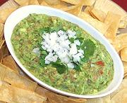

|
GuacamoleMexico - Guacamole | ||||
| Makes: Effort: Sched: DoAhead: |
2 cups ** 30 min Part |
This famous Mexican dip for chips and vegetables is easy to make - if you can find avocados in the proper state of ripness or have time to let them ripen. Also see Note-2, and Note-3. | |||
|
3 1 1/4 1 1/2 1/4 ---- |
oz c # t # ----- |
Onion white Chili Serrano Cilantro chopped Avocados ripe (1) Salt Tomatoes --Garnish White Onion chopped Cilantro chopped |
Make: - (30 min)
|